¶
🗓 Week 16 / 13 - 17 February 2023
first micro-challenge week¶
with Daphne, Josep, Santi, Mikel, Edu, Perta and Adai
disclaimer, I was sick the entire week and am still recovering. meaning that my intellectual input into this project equals 0 (maybe not entirely, maybe 10-20%) because my brain was numb and its hard to think about something else then how to suppress the need to caugh or to refill the ginger-pepper-garlic-jar with hot water to make sure to stay hydrated. however, I showed up every day and put all energies I had into supporting my team whereever I could - and in the end it turned out that also my attendance was as essential as that of my dear sisters.
okay, coming to the project itself… in the first micro-challenge week we are asked to implement some of the skills we learned (or not but at least got introduced to) the weeks coming up to this, like what lasercutting is, what parametrics are, how to code arduino sensor…
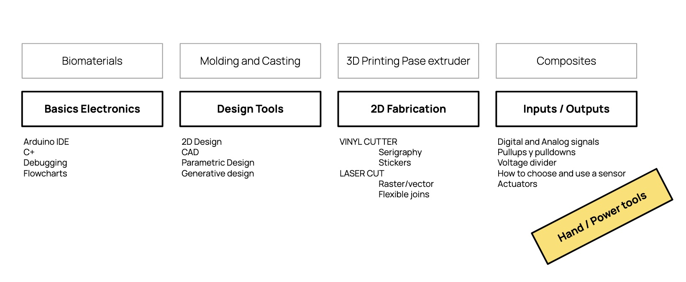
my personal work evolves around storytelling, making up spaces for voices to resonate in and miking up the circles people find themselves thinking with. as I am in the MDEF programm at the moment working with myrto 24/7, we decided to took the chance to step back from our togetherness and let ourselves go with tthe flow of some other ideas. Marielle and Carolina had already found each other and merged their POC-experience-frustrations into a concrete idea of working with the ignorance of white people towards the statues of colonizers and their histories in the city (BCN). in my theoretical thoughworld I am dealing a lot with (de)colonial practices and anyways, this means re-telling stories and giving voice, so I stepped in to become the white addative to our multiracial team.
Museum Of Colonialization (MOC)¶
with marielle and carolina
there are multiple spaces where I reflect on this weeks work, we worked in a miro board, maintained a notion page throughout the processs, and created a GitHub repository for an easy access to our files and experiences.
here I will more individually reflect on the team work and my individual input.
how we came together¶
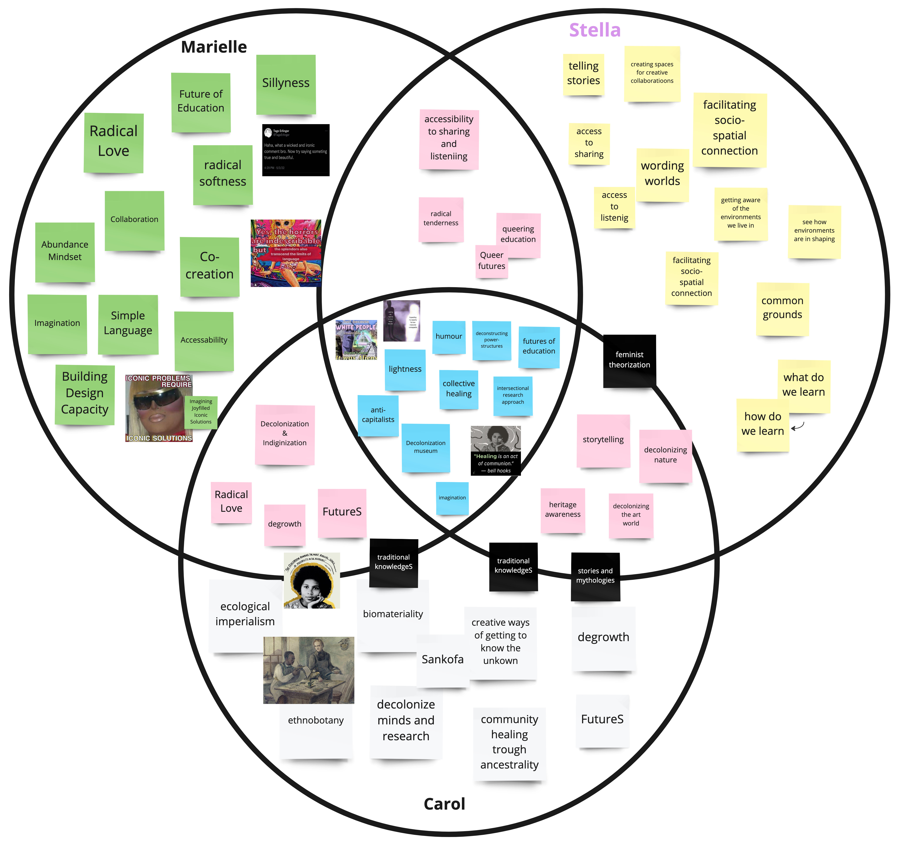
our overlapping interest show our common concern with the “truth” we are being told and the way to tackle their revealments. we agree on that the present time was very poorly designed by a selective group and that it needs the uncovering of the dirty history of hidden public artifacts in order to embrace other futures (by other we mean the furthest point possible from patriarchy, capitalist and neo-colonist structures). in our ideation processes and references we encounter funny ways to deal with ignorance and cynical approaches to sillyness.
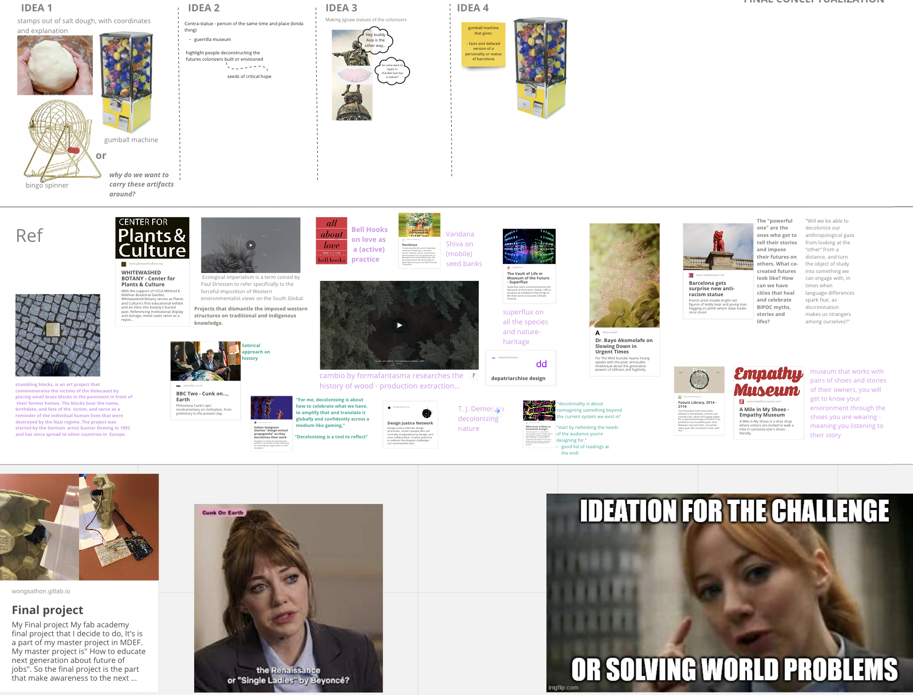
what we provide¶
we design a first prototype for a transparent gumball machine that contains easily digestible, fun(?) facts about the colonisers who have shaped the city. the idea is that one encounters it somewhere in the city, presses a button and opens the (paper) ball received. inside, one finds a sticker with the image of a coloniser and a fun(?) fact about that person. opening the paper ball reveals a letter asking the reader to follow the given coordinates and place the stickers at the location - which will be associated with the (legacy of the) person on the sticker. We aim to raise awareness and engage white citizens (whiteness here as a concept of power and privilege of the dominant group in society) who do not think about the people who were and are celebrated as homeland heroes, let alone know about their terrible deeds, and are often not interested enough to research the history themselves. that is why the machiene is supposed to operate in the multiverses of Barcelona and spit out the balls to those who actively make a promise to obtain knowledge. We call this gumball machine, the museum of colonialization (MOC).
how we get there - in theory¶
the first phases are thinking processes about how we want people to engage with the colonial past of the city. we come up with ideas of a toolkit to cast immediate environments and transform them into stamps, we think about pasting QR-codes onto statues that would lead to a digital environment of knowledge transmission. soon we venture to the idea of having a gumball machine that in exchange for a promise spits out little versions of the statues that are to be found in the city with their coordinates and some unpopular funny (or rather cynic?) facts about their background. we early on in the process agree upon making knowledge easily digestiable, not speaking to an intellectual public that(probably anyways) is concerned with the theme of (de)colonial practices but instead speak to all those people walking the streets without paying attention to the (come on, actually pretty obvious) colonial legacies. ok, so far so good, now it is just a matter of making a machiene that has a mechanism that spits out something (a ball) when pressing a buttom (to involve some arduino and coding here), little scultures that can be (dis)assembled (maybe press-fit with the lasercut), stickers on which there are coordinates and fun(?) facts about the represented persons (vinylcut), balls that can contain these sculptures (origami-shapes cut with laser or vinyl), and of course the research on the people we would like to display (our intellect of using the world wide web). We devide tasks. even if one of our main overlaps is anti-economic-growth, the division-of-labor-thought serves well in the right moments (also we unfortunately put ourselves into a system that operates based on progress and output). together, Marielle and Carolina would design the look of the gumball machine. then, Marielle would take over the mechanic parts and with their arduino skills. With the help of Carolina whereever she would be helpful and has time to do so. furthermore, Carolina would be busy with designing the contents about the colonizers - whereas the research we would do the three of us. due to expected time-limitation we already here decide to pick each one person that is represented somehow in the city of Barcelona and each focus on some facts about that person. I would be concerned with the design of the ball for now and then help where needed. We have another idea att that moment. Maybe, a promise is not enough? What if we could create an application that opens the camera app automatically, and registered whether a photo of the stickered statue is hashtagges somewhere on social media? Well, wee see, that might be something for another iteration. For now, lets start crafting…
how we get there - in practice¶
I will rather shortly reflect on this here and only focus on the work I did individually. all of this and more can be found in the GitHub repository in more detail.
somehow I was fascinated even from before with the online tool for origami simulations. so we decided I would make the shell, the ball to contain the colonizers out of folded paper. the making of the origami spheres was more complex than I expected but I had a lot of fun and curious outcomes while working on it. the steps I took:
- getting to know origamisimulator.org (origami model visualization
- researching origami-simulator library for a fitting design
- adapting the design according to our needs
- translating the (rhino)file into a file readable by the lasercutter (lasercutter software)
- laser-cutting the piece in paper (includes the trial of power and speed of laser)
- folding the paper into balls
- adapt size and form of the sphere in rhino
- translating the rhino file into a file readable by the vinylprinter (silhuette studio software)
- vinyl-printing the piece onto paper (includes the trial of blade-depth and force of vinyl-knife)
- folding the paper into balls
the origami-simulator is designed by an amanda who very helping explains how things work and offer some example files on her github page. yet to understand all of this, it took some time and to figure that files can be created and adapted in rhino to work in the simulator, took some more. to explain it short here, she has some example files under which one of an amazing sphere and the simulation shows clearly how it folds and unfolds. I downloaded this file, opened it in rhino, exploded the existing design and define groups and color codes anew, accoding to the needs of our balls.
{kind=link}
the online simulator reads SVGs in one way (File - Design Tips on the webpage) (Mountain folds have red stroke - rgb(255, 0, 0), hex #ff0000; Valley folds have blue stroke - rgb(0, 0, 255), hex #0000ff; Boundary edges have black stroke - rgb(0, 0, 0), hex #000000) which can vary from the rules used in the lasercutter- and the vinylprinter software. here often you can define the actions and allocate them to colors of choice. but its important to keep in mind that the simulation SVGs do not necessarily have the same color-codes as the rhino-files used for printing. After exporting the rhino-drawing as an SVG, the simulator shows my first trials that where kind of beautiful yet definetely not as expected.
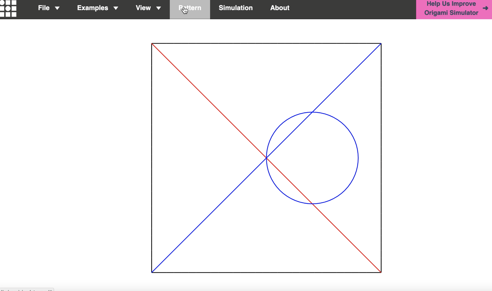 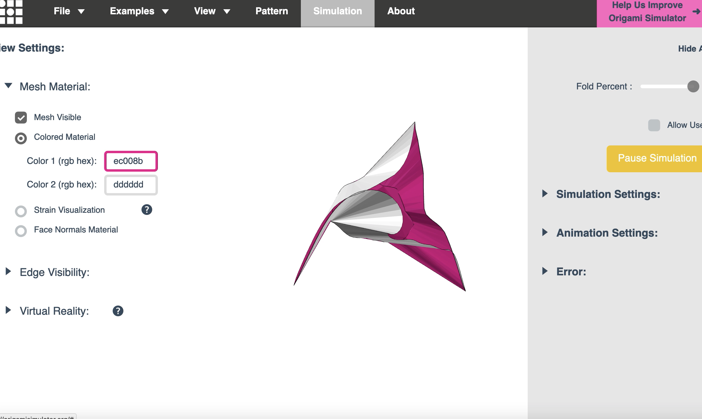
here you can see the simulation
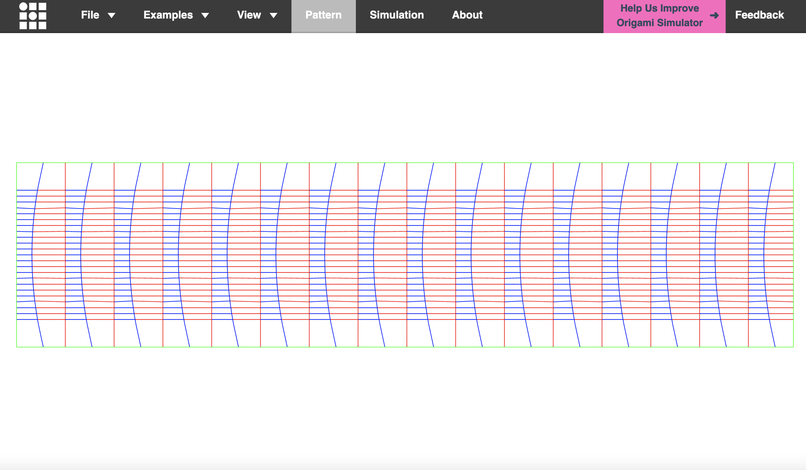 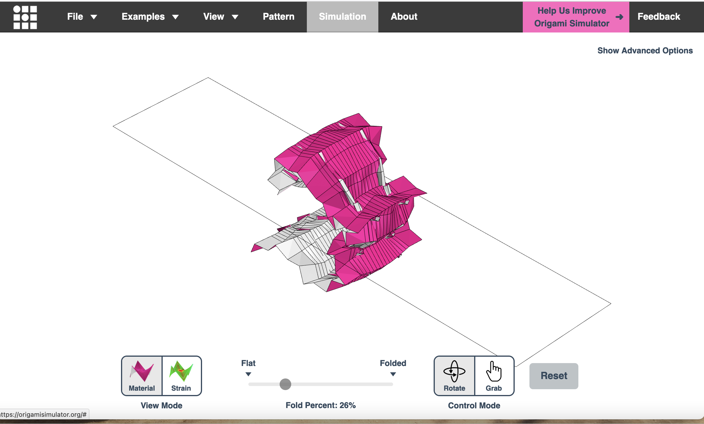
okay, once I figured how it all works, I tried to immitade amandas design and to play with some drawings in rhino, to then upload these into the simulator and print with the vinylcutter.
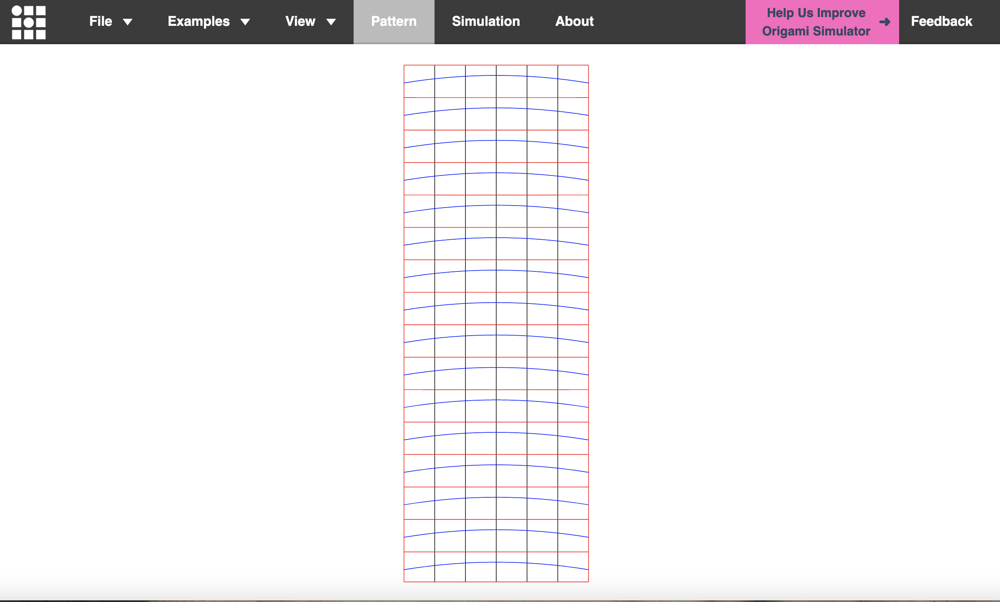 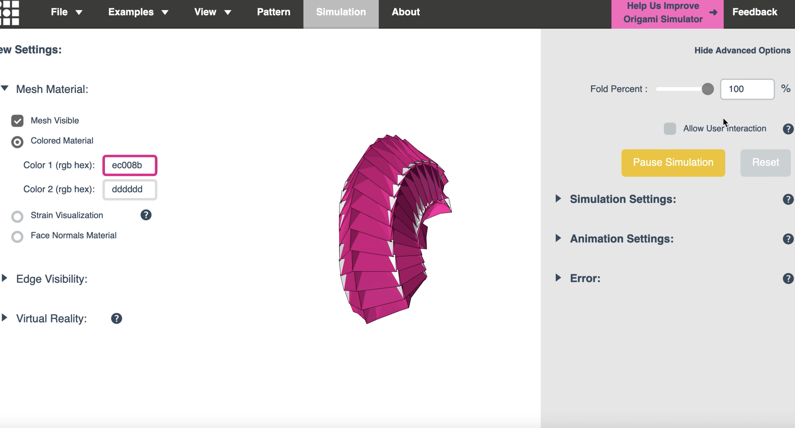
here you can see the simulation of the almost final piece - something is still wrong.
so in the end it all seemed quit difficult to get the right proportions and stuff so I sticked to amandas file and just adapted the size to a A3 length in order to make it handy when printing. and look there, the fold paper looks pretty much like the simulation. in the end, what does it matter if I create the file myself or downloaded other peoples work? sharing is caring and I am sure amanda put them out there for us to make use of them.
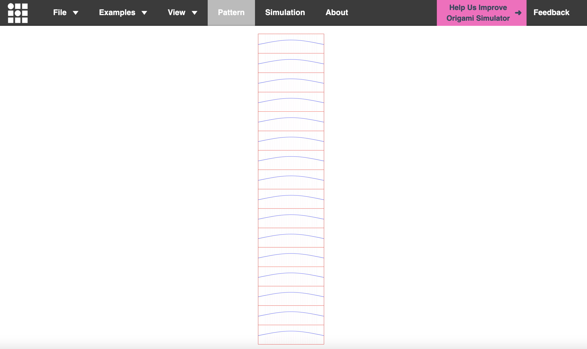 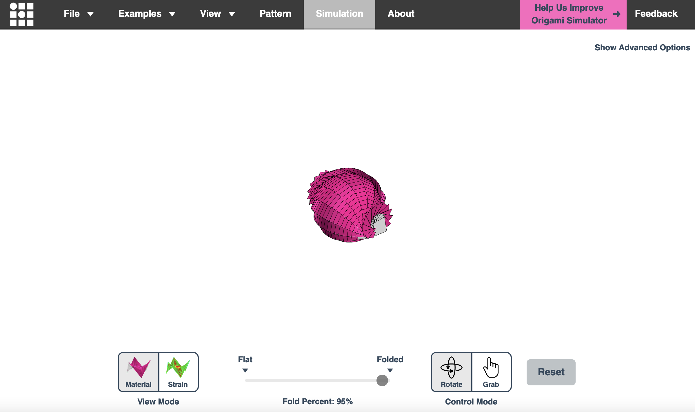
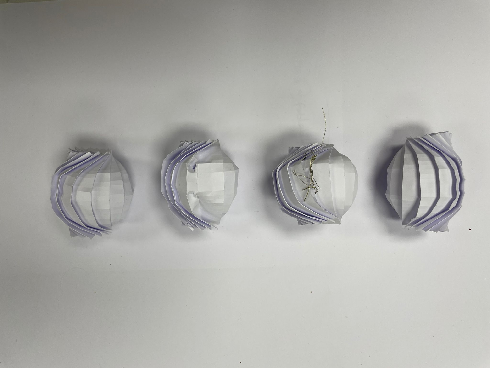
a few more things that came up while cutting and printing… we use paper (because we want to print text on them and have the hapticity of a entrance ticket or letter or something foldable that is easy to pocket away), meaning tha engraving the pattern in order to make fold easier have to be very precise not to cut through fully.
my experience with the lasercut. I tried a variety of power and speeds
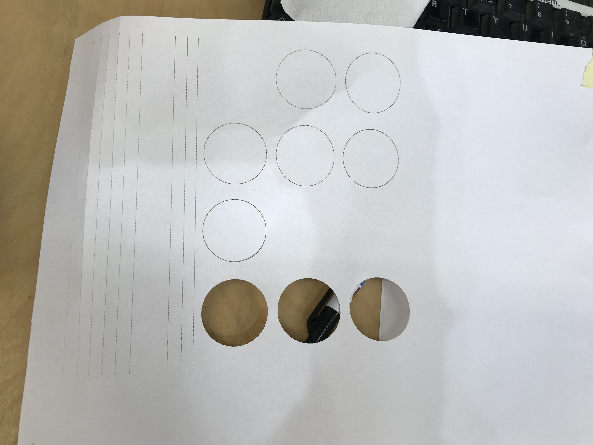
and in the end came up with this settings (yet they vary for each lasercutter. I tried with another lasercutter and it was way to heavy there)

but for the actual balls we did not make use of the lasercutter (mostly due to bad organization and availabilty of the lasercutter) but instead used the vinylcutter. this takes way longer and about the precision can be fought. but it had two great advantages… we could take it with us and for that work on it with immediate adaptations and because it has a blade instead of a laser, there are no traces of burning material to be seen in the end piece.
for the vinyl print the final settings were the lowest possible for the folds and the standard cutting ones for the outline.
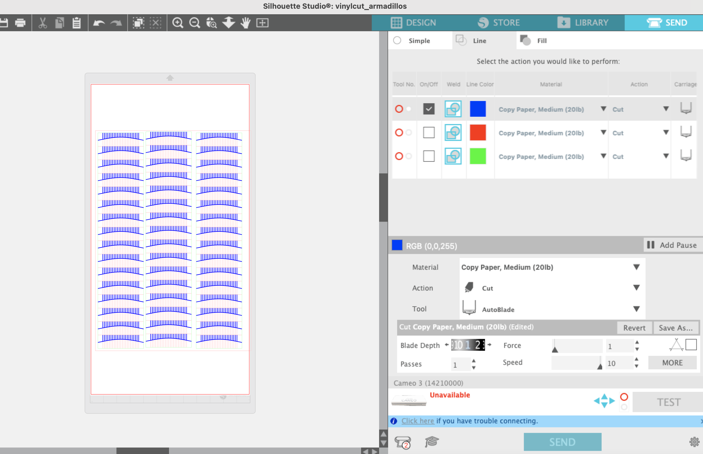
okay, the making of the balls was thought to be the most easy and time-least intense task yet it turns out to keep us busy for quite some hours, days and evenings. in the end, we made it to these little creatures that thanks to Myrto got the name Armadillos (because they look like them…).

and heeeere in it’s preliminary final state:

what we overlooked¶
rather than reflecting on my personal shortcomings and the ways I could have had invested more into this (which sadly was pretty much constrained by my health conditions this week), I will take some time to write a citique on our common output and the alignment with out initial intentions.
critique on the muesum of decolonization¶
in February 2023, three master’s students in Barcelona design a first prototype for a transparent gumball machine that contains easily digestible, fun(?) facts about the colonisers who have shaped the city. the idea is that one encounters it somewhere in the city, presses a button and opens the (paper) ball received. inside, one finds a sticker with the image of a coloniser and a fun(?) fact about that person. opening the paper ball reveals a letter asking the reader to follow the given coordinates and place the stickers at the location - which will be associated with the (legacy of the) person on the sticker. the teams aim is to raise awareness and engage white citizens (whiteness here as a concept of power and privilege of the dominant group in society) who do not think about the people who were and are celebrated as homeland heroes, let alone know about their terrible deeds, and are often not interested enough to research the history themselves. that is why the machiene is supposed to operate in the multiverses of Barcelona and spit out the balls to those who actively make a promise to obtain knowledge. they call the maschiene, the museum of colonialization (MOC). in designing the prototype, the team fuses architectural components from different places (relevant to them), mainly from china town(s) and indigenous and traditional Angolan houses. The use of rounded corners and few straight lines is intentional to express the emotionally charged theme and the many inspiring unputs.
in presenting their prototype, the multi-ethnic team shows their concern about the state of (BCN?) society, which is still far from actively practising decolonisation by addressing its legacy of power and resource distribution, the suppression of culture and language, and the imposition of Western values and ways of life in general. it is a process of undoing the effects of colonialism and challenging colonial values, such as the belief in the superiority of Western culture or the notion of progress as defined by industrialisation and economic growth. in this sense, using the term “museum” can be seen as difficult, as the whole concept of the “museum” is an invention of the colonisers who wanted to educate their home lands about the “exoticism” from overseas. museums to this day exhibit stolen cultural objects and are often seen as educational institutions where white values and knowledge are promoted. the MOC explodes the notion of an institution that you have to pay admission to visit in order to learn about (hi)stories. instead, the MOC displaces the whole city as a place where you can delve deeply into pasts and its impacts on the present - if you want to. yet it remains questionable to try to undo the colonial legacy with this very colonial concept of a museum by giving it that name.
similarly, the imitation of a gumball machine. invented by a North American businessman in the 19th century, these things represent the growth of consumerism, mass production and marketing. all in all, it is a manifestation of the commodification of (leisure) time. the team clearly speaks out against these capitalist values and their reproduction. while in typical gumball machines you pay with coins, here the exchange value is a promise. to start the Gumball, one must answer the question “do you want to visit the museum of colonialization?” with the “yes”-buttom (the only existing). this is definitely a more mind-invested mechanism than giving money, yet it remains a means of exchange and feeds into patters of rapid consumption.
it seems that the intention of the MOC is a brave one, but I have to ask if this implementation of an exchange-based colonialist-museum is not in contradiction with drawing attention to the fact that it is not the capitalist, western values on which the world is based? even if it is widly known that in order to teach, convince, engage with someone, one is ought to speak in their language and thus, if a audience is mainly white citizens and tourists from the states, the museum-gumball-machiene definetely speaks to man, I wonder if the engagement here happens on deep enough levels.
february 19th 2023 by stella dikmans